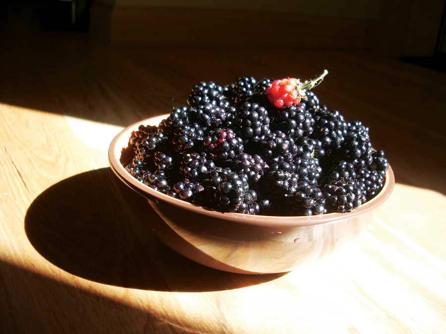
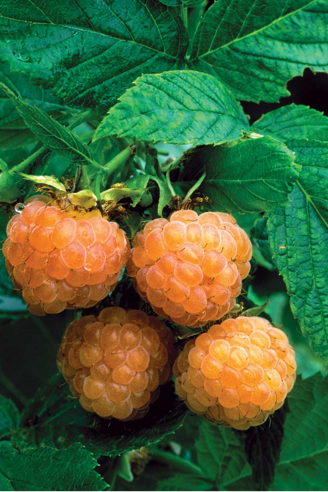

Raspberries and blackberries are the leading bramble fruits . They grow on thorny canes that every kid knows as “sticker bushes.” They like warm sun and well-drained soil, with a pH 5.6 to 6.2, but finding places for these well-armed plants often means growing them along a fence or letting them grow into a thicket to harvest from the outside. If you have the space, the thicket approach is the way to go with June-bearing red raspberries, black raspberries and traditional blackberries. Prickly wild brambles can be tamed by whacking back the edges of the thicket twice a year, and modern cultivated varieties such as thornless ‘Triple Crown’ blackberry make great thickets, too. In Brown County, Ind., Keith Uridel, owner of Backyard Berry Plants organic nursery, has watched a single ‘Triple Crown’ plant grow into a 15-foot wide thicket that’s covered with glossy black berries every summer. Best of all, when Uridel’s young daughters help with the harvest, they don’t have to watch for thorns. For more on blackberries, see Enjoy Fresh Blackberries.
Raspberries do have thorns, but that doesn’t matter much when you’re standing in your berry patch eating two raspberries for every three that make it into the picking basket. Wouldn’t it be great to have even more? By planting a few different varieties, you can have fresh berries all summer long. This was not always so! Until Cornell University breeders released the ‘Heritage’ variety in 1969, all raspberries produced their crops in early summer on the previous year’s canes. Summer-bearing raspberries such as ‘Prelude’ and ‘Lauren’ are still great choices if you want a big crop of berries for freezing and canning, but why stop there? Late summer and fall-bearing varieties such as ‘Autumn Britten’ bear fruit on new growth, with the first berries ripening just as summer-bearing brambles are done. And ‘Heritage’ runs a few weeks later.
If you’re among the many folks who like to grow extra produce to sell or trade at your local farmers market, late summer raspberries may be just the crop you need. When Uridel takes half-pints of his mouthwatering red ‘Caroline’ raspberries to the farmers market in August, many customers buy a half-pint for $3.50, eat it while they’re shopping, and return the basket before they head home.
Preferred soil pH for raspberries and blackberries is 5.6 to 6.2.
View the raspberry and blackberry types chart for details on the best varieties of blueberries, plus pros and cons of each, as well as information on where they grow best.
Find raspberry and blackberry seeds and plants with our Seed and Plant Finder.
To learn how to use raspberries and blackberries in your home landscape, check out the new book Landscaping with Fruit by Lee Reich (Tower, 2009).
See also:
|
 ISTOCKPHOTO Thorns or no, bramble fruits, like these blackberries, make superb snacks. |
 DWIGHT KUHN You’re more likely to find golden raspberries at a farmers market than at the supermarket - better yet, grow your own! |
|